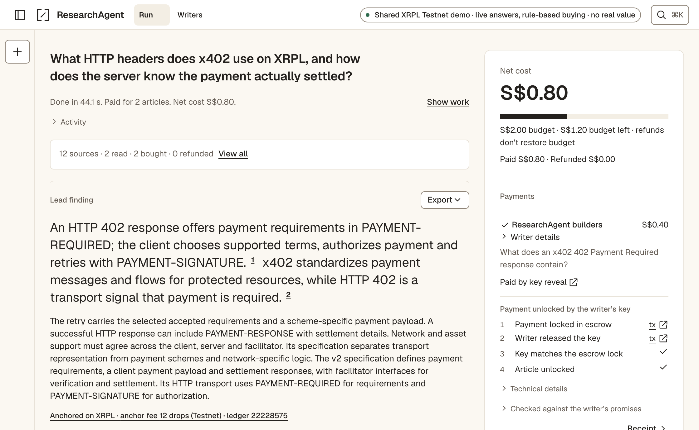
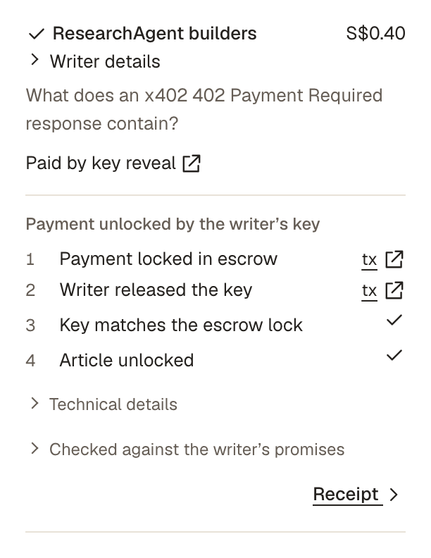

ResearchAgent answers from free sources first, then pays writers for the articles it is still missing, over x402 on the XRP Ledger, inside a budget you set. A model recommends; only policy code can pay.
Testnet · test funds · fictional writers, plus our own labelled build notes · TEST-SGD stands in for RLUSD
SingHacks finals · Ripple track · Swiss Pavilion, SFF · 18 Nov 2026 · facts as of 11 Nov 2026 at 329b64f7github.com/Collaboration95/theFastandtheFungible
Progress since SingHacks · 19–20 Sep 2026
From a hackathon prototype to a product anyone can check on the ledger
At SingHacks a language model proposed each purchase and a person approved every quote before payment; payment was a fixture by default, with optional Testnet settlement.
At SingHacks
Now
Who decides to buy
A language model proposed; a person approved every quote
Policy code buys within your budget after one plan confirmation; a decision model only scores
Fair exchange
Pay first, then read
Key-reveal escrow: the writer is paid only by publishing the article’s key
Refunds
None
A broken promise is refunded on the ledger
Proof
Citations checked inside the app
An offline verifier anyone can run, in TypeScript or Python
Ways in
One web page
A live sandbox, an MCP server for Claude Code and Codex, SDKs and a Mac app
248pull requests merged since 21 Sep
13releases, v0.1.0 to v1.0.2
61Testnet transactions you can re-check live on our ledger page
224receipt test vectors; two independent verifiers agree on all
Counted at 329b64f7 on 11 Nov 2026 (git and gh queries in site/progress/data.json) · “At SingHacks” is the 19–20 Sep event build (e16435a3)
Reachability · one line, no clone
One line runs the whole money path on real Testnet
Finished in 69.0 s · budget S$2.00 · net S$0.40 · gross S$0.70
RESULT PASS
84.2 sfrom an empty npm cache to six Testnet links and RESULT PASS: buy, refund a broken promise, re‑buy, anchor, verify. One cold run on one Mac.
2 of 4cold runs overran the 90 s target. We keep the misses.
If the faucet fails, it prints a labelled SIMULATED run and the reason. The output here is a committed fresh-state run; its own clock excludes the npm download. Links are shortened to their hashes.
Output: docs/evidence/r5-a/try-fresh-output.txt (7 Nov, one SKIP line trimmed) · cold timings: docs/evidence/round4-j2/ · fixture models, fictional writers, faucet wallets
What we built
One question, one budget, and only code can spend it
1AskA question and a budget you set.
2Confirm the planA short sheet confirms the plan, not a purchase.
3Search writersWriters return abstracts and signed promises, never premium text.
4DecideA decision model scores what is worth buying, weighted by trust.
5PayPolicy code locks payment in a key-reveal escrow on XRPL.
6Verify and answerDecrypt, check every promise, refund a broken one, cite, anchor.
Five hard gates, on every run
No premium bytes before a grant.
The budget is the only spending authority; only policy code can buy, never the language model.
One charge per intent, across retries and restarts.
Every citation points at a delivered passage.
Anything simulated or substituted is labelled.
0 gate violationsacross the v5 held-out and off-topic question banks on Testnet (11 Nov).
Spending caps for MCP clients default to zero, and the calling model cannot raise them.
README · Hard guarantees · docs/evidence/v5-heldout/README.md · mcp/policy.ts
Creativity
The writer is paid only by publishing the key: delivery and payment are one ledger event
WriterEncrypt and promiseA fresh key K per buyer. Signs the quote: sha256(K), ciphertext hash, passage manifest, price.
Buyer policyEscrowCreateNative XRPL Escrow. Condition = sha256(K), with a CancelAfter deadline.
WriterEscrowFinishTo be paid, the writer must reveal K as the fulfilment. K is now public on the ledger.
Buyer policyDecrypt and checkDecrypt, check every promised passage, then grant and cite.
Promise kept
Create→Finish, K revealed→decrypt ✓ passages ✓→cited2F5C3D75… → 528DFA6F…
Promise broken
Create→Finish, K revealed→claim missing→writer-signed refund + fraud proofE95BED8E… → B248161A…
Writer no-show
Create→no key by CancelAfter→EscrowCancel: money back, nothing granted8DA4ECE7… → F89DD9B1…
What the ledger does and doesn’t enforce. Key reveal makes delivery atomic: no key, no payment. Quality rests on the signed promises, a fraud proof anyone can check, and reputation. After a finish, the refund is writer-signed: our fixture writer cooperates, and a real writer could refuse. No smart contract: Escrow with a PREIMAGE-SHA-256 condition is native XRPL.
docs/key-reveal-escrow.md · kept and broken: the slide 3 run (docs/evidence/r5-a/) · no-show: docs/evidence/round3-e/runs.json · fixture models, fictional writers
Creativity · Technical depth
The same key-reveal escrow, settled in a stablecoin-style token
TEST-SGD through XLS-85 token escrow
Opt in with --iou on the MCP server or the web app.
Preflight refuses a missing issuer locking permission, frozen or unauthorized trust lines, short balances and transfer fees.
Both verifiers check currency, issuer and the writer’s trust-line balance change, because EscrowFinish has no delivered_amount.
Payments work. Official Testnet RLUSD paid a writer on 3 Nov (1F2449A4…), and a broken promise was refunded.
Escrow is blocked by the issuer, not the network. Token escrow is enabled on Testnet, but the RLUSD issuer’s flags lack AllowTrustLineLocking. One AccountSet by the issuer would allow it.
So we escrow our own token and say so on every amount, receipt and ledger row. It is our top builder-feedback finding.
TEST-SGD · an IOU from our Testnet issuer · no real value · stand-in for RLUSD · no peg, backing or mainnet claim
docs/evidence/m1-iou/ · docs/evidence/rlusd.md (issuer flags 2174353408 at ledger 22058675; refusal predicted, never submitted) · BUILDER-FEEDBACK rank 1
Technical depth
Don’t trust our agent. Verify it, against the ledger.
# Python, no Node: a receipt the live sandbox exported
Another agent pays ResearchAgent; it buys, pays every cited writer a royalty and returns the change.
Recorded on Testnet, 3 Nov
Does it buy the right thing? v5 blind held-out: 16/20 bought and cited, 0/10 off-topic purchases (run once, 11 Nov, on XRPL Testnet: fixture research and decision models with answers written offline, team-authored writers). The key fact leads 7/20 answers. Packages: GitHub Releases; not yet on npm, PyPI or the MCP Registry.
Fractions of a cent per purchase, and it recovers from crashes
435 dropsnetwork fees per key-reveal purchase12 to create the escrow and 423 to finish it, because the finish carries the key: 0.000435 XRP, measured on Testnet.
0 double chargesunder chaos, across retries and restarts500 seeded runs with 130 real process kills; the reconciler recovers in-flight payments. Synthetic ledger, 3 Nov.
How it runs
Hosted for judges on Cloud Run, 13–19 Nov: one shared Testnet payer, caps per visitor, owner controls off.
Each answer names its models: live, or a labelled fixture fallback.
Persist before submit: a restart never signs twice; a missing transaction is pending, never failed.
Mainnet is disabled in code. What it needs is on the compliance slide and in our builder feedback.
docs/evidence/round3-a/probe.json · docs/evidence/chaos-279-500.json · README · Status and limits
UX and design
The money is the hero, and every label tells the truth

One environment indicator in the header · the answer leads · each payment step links to its transaction

One bought article: paid by key reveal.
One live run on the hosted demo, 11 Nov (docs/evidence/hosted-export-nov11/) · XRPL Testnet · live answers, rule-based buying, team-authored writers · captured by hosted-shots.mjs, unedited
Reachability · Feasibility
Agents need facts behind paywalls, and writers need to be paid per read
Who pays
The asker, a person or their agent, pays per article, inside a budget they set per question.
The writer sets a price per article and is paid on the ledger, with an XRPL address and no card processor.
We earn a service fee when another agent hires ResearchAgent over x402; part of it goes to every cited writer.
Market
Writers are being left out. Small publishers have lost search referrals, and AI licensing deals mostly go to major brands.
Today’s tools price a whole site per crawl or by revenue share.
None we reviewed judges value before buying, checks delivery against a promise, or refunds.
Why now
Agents act through tools: Claude Code, Codex and other MCP clients call them on their own.
x402 gives HTTP a payment step a machine can complete.
XRPL token escrow is enabled on Testnet, so the same escrow can settle in a stablecoin once issuers allow it.
Where we are: no customers, pilots or revenue yet, and we have not sized the market. Writer number one is us, labelled; the next are people who consent. The service fee and royalty split ran once on Testnet.
Open Markets / CJL, “Same Gatekeepers, New Tollbooths” (Apr 2026) · Cloudflare Pay Per Crawl and x402 posts · docs/FINAL-PUSH.md §14 · docs/evidence/hire-274.md · qa-prep Q4
Reachability · compliance readiness
Built for audit. Honest about what a regulated launch still needs.
Every spend is authorised by deterministic policy code, capped, and written to a hash-chained audit log whose head is anchored on the XRP Ledger, even when the agent refuses to buy. It is Testnet only, and each gap has a named next step.
Built (Testnet)
Not done
Custody
Keys stay server-side, out of logs, audit rows and the browser
KMS or HSM and rotation; the hire flow holds funds in transit
Spend limits
A budget per question and a daily cap; only policy code buys
People and roles from the git history (git shortlog) · AGENTS.md (how work is run) · Testnet XRP and TEST-SGD have no value; receipts keep ledger indexes if Testnet resets